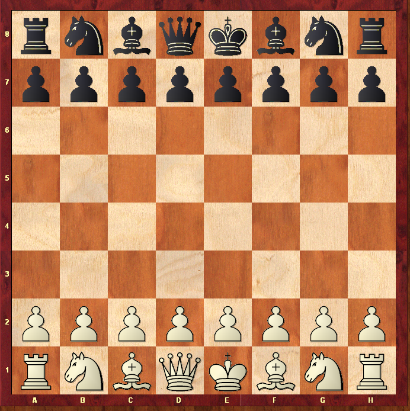

Правила игры:
На шахматной доске 8 горизонталей, которые обозначены латинскими буквами a, b, c, d, e, f, g, h, и 8 вертикалей обозначаются арабскими цифрами 1, 2, 3, 4, 5, 6, 7, 8, всего 64 клетки, из них 32 белые и 32 черные.

Расстановка фигур
Каждый игрок перед началом игры имеет 16 фигур: 8 пешек, 2 ладьи, 2 коня, 2 слона, короля и ферзя. Чтобы начать игру нужно правильно расставить фигуры на шахматной доске, осуществляется это следующим образом:
Расстановка шахматных фигур
Если по какой-то причине у Вас шахматная доска без шахматной нотации (отсутствие букв и цифр по краям доски), тогда поверните доску так, чтобы белое поле в углу было справа от Вас. Более подробно про правильную расстановку фигур на шахматной доске читайте здесь.
Ход в шахматах
Как было замечено выше, кто играет белым цветом тот и первый ходит. Ход – это передвижение своей фигуры на не занятое поле, если это не взятие. Взятие же – это передвижение своей фигуры на место фигуры соперника, при этом фигура соперника снимается с доски. Далее мы рассмотрим по отдельности каждую фигуру.
Как ходят фигуры
Король – самая главная фигура в шахматах, цель игры в шахматы это поставить мат королю, после этого игра прекращается. Кто поставит мат тот и выигрывает партию. Король единственная фигура, которая не может взять фигуру, если она защищена, он также не имеет право ходить под шах, к тому же не может приблизиться к вражескому ферзю и королю (ближе, чем на одну клетку).
Как видим, у короля может быть самое большее восемь клеток, на которые он может переместиться. Если король стоит на краю доски, у него остается только пять возможных ходов, а если в углу - только три.
Ладья - ходит и бьет фигуры противника на любое доступное поле по вертикалям или горизонталям, на которых находится.
Вот пример. Ладья не может пойти на крайнее левое поле доски - там расположен ее король. А вот черную пешку она может забрать, то есть снять с доски, и стать на ее место.
Слон- ходит на любое доступное поле по диагонали.
Заметим, что один из слонов у каждого из игроков ходит только по белым полям (поэтому и называется - белопольным), а другой - только по черным полям (этот слон - чернопольный).
Конь - единственная шахматная фигура, способная перепрыгивать через другие фигуры.
Всем известно, что конь ходит буквой «Г». Он прыгает по горизонтали или вертикали через клетку и тут же переходит на соседнее боковое поле другого цвета.
Ферзь самая сильная фигура. Он совмещает ходы ладьи и слона и может с места, на котором находится, пойти на любое доступное поле по вертикали, по горизонтали или по диагоналям.
Ферзь может пойти на любое поле, показанное стрелками, но может также взять ладью или слона черных. Для этого та или другая фигура снимается с доски, а ферзь ставится на ее место.
Пешка - их у каждого из соперников по 8, пешки ходят только вперед по вертикали на одну клетку (если она не занята своей или чужой фигурой). Но из первоначального положения каждая пешка может один раз за всю игру пойти сразу на два поля. Среди других фигур только пешка бьет чужие фигуры не так, как ходит, а наискосок - на одну клетку вперед по диагонали.
Что такое рокировка
Один раз во время игры каждый из королей (белый или черный) может сделать рокировку. Делается она так. Король перемещается по направлению к одной из ладей через одну клетку, а ладья переносится через него и становится рядом.
Вот пример рокировки белого короля.
Рокировка на королевском фланге называется короткой, на ферзевом - длинной.
Если король хоть однажды двигался, рокировка невозможна в обе стороны. Также нельзя рокироваться с ладьей, которая покидала свое место. Рокировка временно невозможна, если король в этот момент находится под нападением фигуры соперника, а также в том случае, если под ударом оказывается поле, которое король должен занять или пересечь.
Нельзя также рокироваться, когда между королем и ладьей, с которой задумана рокировка, находится другая фигура.
Взятие на проходе
Если пешка делает из первоначального положения ход на два поля и переступает клетку, находящуюся под ударом неприятельской пешки, то последняя может побить двигавшуюся пешку. При этом двигавшаяся пешка снимается с доски, а бьющая становится не на ее место, как это происходит во всех других случаях, а на "битое" поле, которое та перепрыгнула.
Шах и мат
Если любая фигура - ферзь, ладья, слон, конь или пешка - нападает на короля, то такое нападение называется шахом. От шаха нужно обязательно защититься следующим ходом. Есть три способа защиты. Можно отойти королем, уничтожить нападающую фигуру или же поставить между ней и королем свою фигуру.
Возможны все три защиты от шаха черной ладьи. Белые могут увести короля, взять нападающую ладыо слоном или же заслонить короля ладьей.
Если ни один из способов защиты от шаха выполнить нельзя (нельзя увести короля, уничтожить нападающую фигуру или заслонить короля своей фигурой), то получается мат королю, партия прекращается.